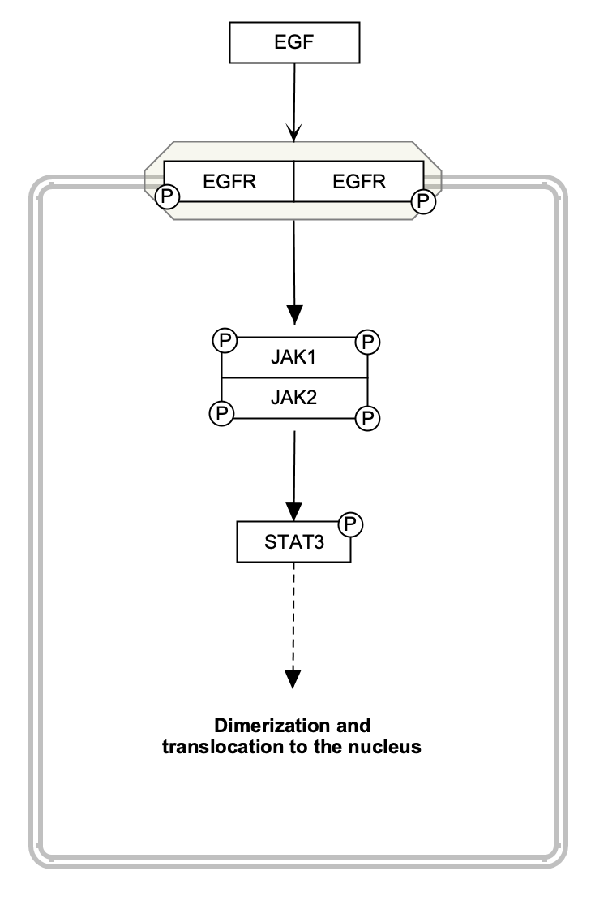

Background
Protein phosphorylation is a common post-translational modification of proteins, which involves the addition of a phosphate group to specific amino acids of a protein by enzymes called kinases. The phosphorylation of proteins affects their activity, either activating or inactivating them. WikiPathways models allow for the addition of a number of State objects to any DataNode, which can be used to depict not only phosphorylation of specific amino acid residues, but also other post-translational modifications. In addition to indicating that a protein is phosphorylated, we have developed a method for adding specific site information to states on nodes in a way that is amenable to data mapping in tools like Cytoscape. The information is added as a structured comment.
The process of protein phosphorylation by a kinase can be depicted in different ways, with varying degrees of detail. In this example, a serine residue of the BAD protein is phosphorylated by AKT kinases, which inactivates the protein.
The below figure shows two styles of modeling this phosphorylation event, with the left side showing a commonly used "condensed" style, and the right side showing an expanded style. The condensed style uses a mim-inhibition interaction directly from the AKT group to the BAD protein to indicate the inactivation caused by the phosphorylation, and the phosphorylation is indicated by the State added to the BAD node. The expanded style shows the phosphorylation by the AKT kinases as a mim-catalysis interaction acting on a mim-conversion interaction between the unphosphorylated and phosphorylated BAD nodes.
Which one of these two styles to use is up to the pathway author, and depends on other aspects of the pathway, for example the overall scope/focus, layout considerations and the overall size of the pathway. If the phosphorylation event is the main point of the pathway, the expanded style could be used. If the pathway includes a central phosphorylation cascade with many subsequent phosphorylations, the condensed style makes more sense. In the exercise below, we will be using the condensed style.
Your Mission
Model the phosphorylation pf BAD, depicted in the below figure, and add a structured comment to the state describing the phosphorylation event:
Add State object and structured comment to the pathway node
- Download the starter pathway here: WP5278.
- Launch PathVisio and open the dowloaded file via File > Open.
- Right-click on the BAD data node and select Add State.... from the context menu.
- Select the State object and in the Properties panel, enter "P" under Text Label.
- Next, we will add a structured comment to the state, to describe the details of the phosphorylation site and to enable data mapping. To do this, follow these instructions to find relevant phosphorylation site information, and creating a structured comment.
- Double-click on the State object and in the interface that opens, select the Comments tab. Enter the structured comment here.
- Done!
- Save your work as a GPML file under File > Save As.
- Drag-and-drop the GPML file below to submit.